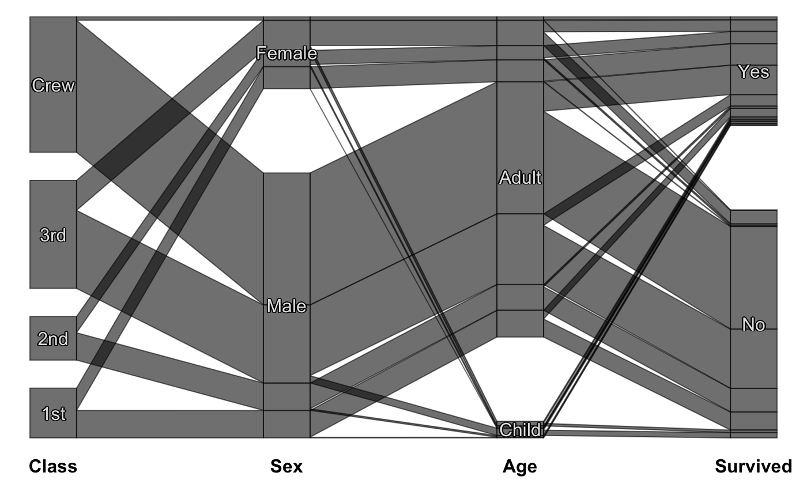
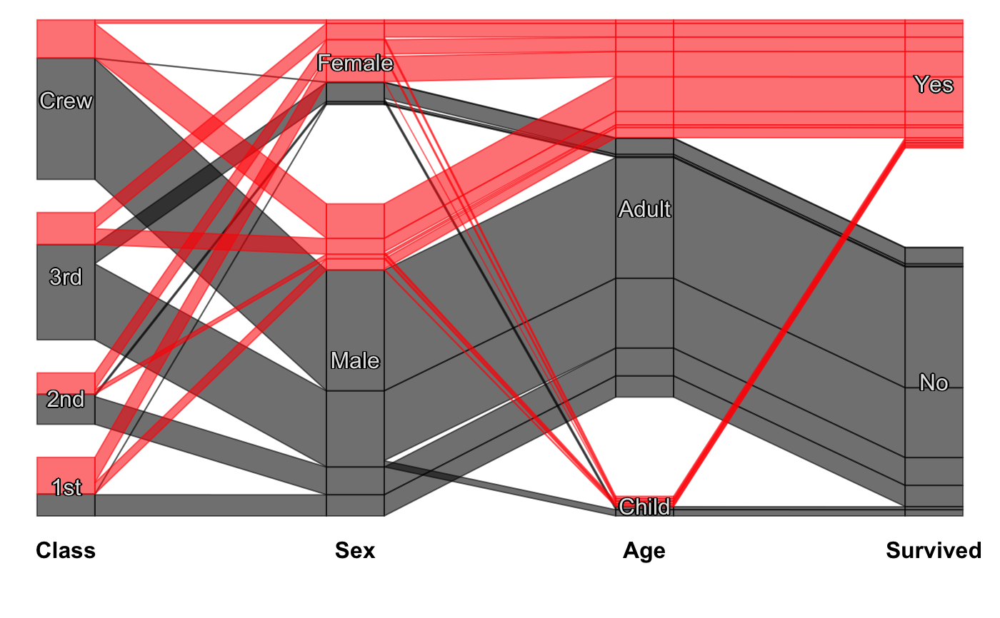
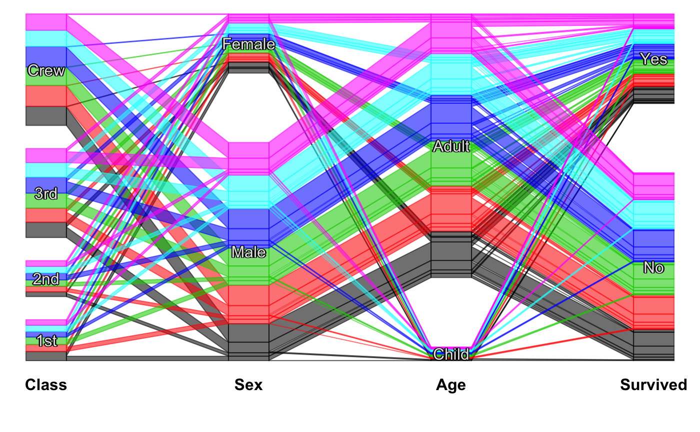
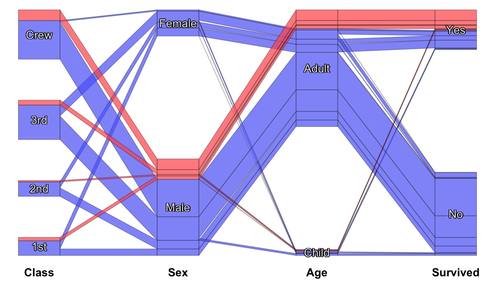

scpcp.RdThis function creates a static CPCP plot using base R graphics.
The function offers color brush / highlighting and several options for the labels and colors.
Efficiency is improved by replacing sets of parallel lines by polygons.
A ggplot version is under construction. A deprecated interactive version based on iplots (without labeling) is still available as extracat:::cpcp.
For reordering of category orders in CPCP plots see steptile.
scpcp(data, freqvar = "Freq", max.N = 1e6, gap = 0.2, sort.individual = TRUE, level.width = 0.2, polygon = TRUE, base.colour = alpha("black", 0.7), label = TRUE, lab.opt = list(rot = 0, col = 1, bg = TRUE, abbr = FALSE, abbr.var=12,hide.sel=TRUE, var.labels = TRUE), sel = NULL, sel.hide = TRUE, sel.palette = NULL, col.opt = list(), plot = TRUE, return.coords = !plot)
| data | The |
|---|---|
| freqvar | Optional specification of a frequency variable. |
| max.N | The plot handles each case as a separate polyline, similar to conventional pcps. This option limits the number of observations. |
| gap | The size of the gaps between the categories as a total proportion. |
| sort.individual | Whether or not the cases (lines) are additionally rearranged according to the neighboring variable. This minimizes crossings. |
| level.width | The width of the rectangles representing the variables/categories. |
| polygon | Whether or not to replace parallel lines by polygons. This improves both efficiency and undesirable color effects. |
| base.colour | The standard color used for the cases which are not highlighted via |
| label | Whether or not to draw category labels. |
| lab.opt | A list with options for the labels. See e.g. rmb |
| sel | A selection defining colors. This can either be an integer vector, a factor or an expression which returns such a vector.
For instance
|
| sel.hide | Whether or not to hide the |
| sel.palette | The color palette for the selection. See getcolors. |
| col.opt | A list of options for the color palette. See getcolors. |
| plot | Whether or not to plot. |
| return.coords | Whether or not to return the coordinates per observation.
|
Either a logical value or the coordinates defining the polylines per observation.
Alexander Pilhoefer, Antony Unwin (2013). New Approaches in Visualization of Categorical Data: R Package extracat. Journal of Statistical Software, 53(7), 1-25. URL http://www.jstatsoft.org/v53/i07/
A grid-based version is still under construction.
In polygon mode single cases are still shown as a line rather than a ribbon of width 1/n.
#scpcp(titanic, level.width=0) #scpcp(titanic, gap=0) #default with highlighting scpcp(titanic, sel="data[,4]")# random colors like for instance from a clustering scpcp(titanic, sel="sample(1:6,nrow(data),T)")# another one with some formal changes require(scales) scpcp(data=titanic,sel="Sex=='Male' & Survived=='Yes'", sel.palette = "w", col.opt=list(alpha=0.7,border=alpha(1,0.3)), gap = 0.5, level.width= 0.3)# NOT RUN { # mushroom data from the UCI machine learning repository data(agaricus) MR <- agaricus levels(MR$stalk_root) <- c(levels(MR$stalk_root),"N/A") MR$stalk_root[which(is.na(MR$stalk_root))] <- "N/A" op <- optile(MR[,1:12], method="joint") scpcp(op, sel = "odor",sel.palette="w", col.opt = list(border = alpha(1,0.1)), lab.opt=list(rot=45)) # ADAC ecotest data with four clusterings (k-means, mclust, hc Ward, hc complete) data(eco) # illustrate reordering success using coloring scpcp(eco[,13:16], sel = "data[,1]", sel.palette="d") scpcp(optile(eco[,13:16]), sel = "data[,1]", sel.palette="d", col.opt = list(border=alpha(1,0.1))) # car classes (lower to upper class) eco$Klasse <- factor(eco$Klasse, levels = levels(eco$Klasse)[c(3,1,2,7,4,5,6)]) scpcp(eco[,17:20], sel = eco$Klasse, sel.palette="s", col.opt = list(h=140)) # the color variable included scpcp(eco[,c(3,17:20)], sel = eco$Klasse, sel.palette="s", col.opt = list(h=140),lab.opt = list(abbr=5)) # }